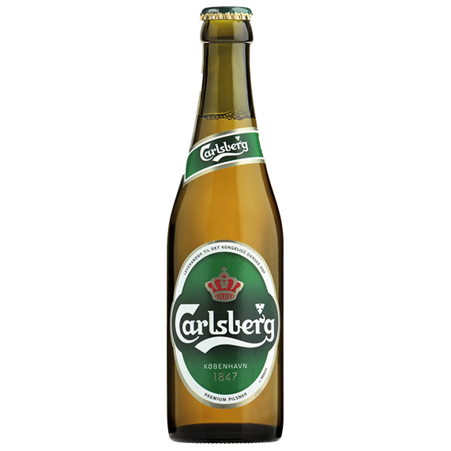

Øl
Hvad er øl?
Øl er en alkoholisk drik, der fremstilles ved en bryggeproces, hvori der indgår malt, vand og gær.
Der findes desuden en lang række andre ingredienser, der i større eller mindre omfang finder anvendelse i brygningen af visse øltyper.
Almindeligvis vil der være tale om humle (eller andre kilder til bitterstoffer, som for eksempel Porse), men også for eksempel råfrugt, chokolade, lakrids, koriander,
stjerneanis og forskellige sukkerprodukter, som kandis, moskovado og/eller honning anvendes. Malten fremstilles hovedsageligt af byg, men andre kornsorter, såsom hvede, anvendes også
Igennem historien er øl blevet brygget mange forskellige steder, men især Tyskland, Belgien og Tjekkiet er berømte for deres øl.